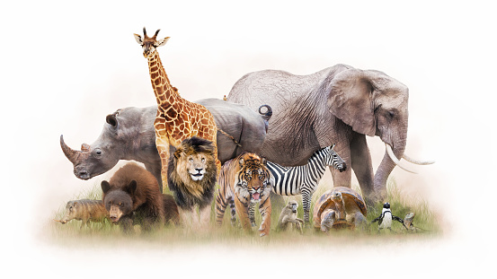

Presentation on wildlife
This presentation gives an overview of various wildlife conservation societies,
their role and the government's initiative for wildlife conservation in india.
Wildlife is a precious gift of God to this planet. The term 'Wildlife' not
only caters to wild animals but also takes into account all undomesticated
lifeforms including birds,insects,plants,fungi and even microscopic organisms.
For maintaining a healthy ecological balance on this earth,animals,plants
and marine species are as important as humans.
Each organism on this earth has a unique place in food chain that helps
contribute to the ecosystem in its own special way. But,sadly today,many
of the animals and birds are getting endangered.
The natural habitats of animals and plants are being destroyed for land
development and farming by humans.